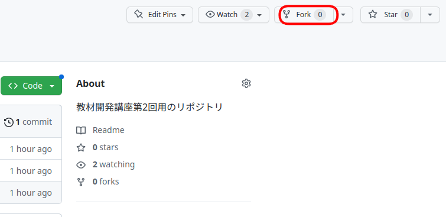
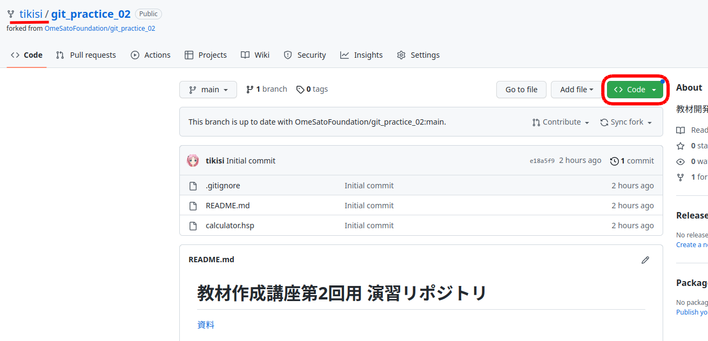

第2回 教材開発講座(前半)
前回はgitを使いバージョンをコミットとして保存、また特定のコミットの状態に復元する方法をやりました。 今回は複数人で開発する際に利用するものとして、ブランチという機能を扱います。
目次
1. 題材
今回は電卓のプログラムをHSPで作っていきます。 この開発をgit使って管理することで、複数人での開発の流れを体験してもらいます。
電卓の機能
- それぞれの入力ボックスに数値と演算子を入力する
- 計算ボタンを押すと計算結果が表示される
対応する演算子
+: 足し算-: 引き算*: 掛け算/: 割り算\: 剰余算(あまり)

2. 準備
1.1 fork
今回の演習用として用意したソースコードが置かれているリポジトリを、みなさんのアカウントの管理するリポジトリとしてコピー(fork)します。
演習用リポジトリを開いてください。
Forkと書かれた場所をクリックします。Create a new forkをクリックします。
Create forkをクリックします。
1.2 鍵の登録
設定がまだの人は、第1回の1.2章を参照してラズパイでも設定してください。
1.3 git clone
git cloneして、ラズパイ上にソースコードを持ってきます。
緑色のcloneボタンを押します。(この時、左上の名前が自身のアカウント名と一致しているか確認してください。)
赤枠で囲ったボタンをクリックしてリンクをコピーします。

ラズパイでターミナルを開きます。
ターミナルで以下のコマンドを入力してcloneします。
xxxxxxxxxx11git clone コピーしたもの
1.4 git config
GitHubに登録したユーザー名とメールアドレスを設定します。
xxxxxxxxxx21git config --global user.name 名前2git config --global user.email メールアドレスcdでクローンしてきたリポジトリに移動してから、以下の設定もしてください。
xxxxxxxxxx21cd git_practice_022git config --local --add merge.ff false
3. add&commitの復習
3.1 最初の状態を確認
hspエディタを使ってgit cloneしてきたディレクトリ中のcalculator.hspを開いて、F5キーで実行してみましょう。
以下のように入力ボックスに入力し、計算ボタンを押しても計算結果は0のままだと思います。(まだ計算処理を実装していないからです。)
3.2 足し算の実装
まずは、足し算ができるように処理を書いていきましょう。
答えの計算とコメントが書いてあるラベル部分に計算する処理を書いていきます。
x1#include "hsp3dish.as"2gosub *init4;メインループ6*main7redraw 08gosub *draw9redraw 110await 5011goto *main12;答えの計算14*calc15goto *main17;ボタンがクリックされたとき19*clicked
足し算は以下のように追記すると実装できます。
xxxxxxxxxx51;答えの計算2*calc3if OP="+" : ans=A+B ;足し算4goto *main
電卓画面の入力ボックスに入力された値は、左から順に変数A, OP, Bに格納されています。
追記した処理では、もし真ん中で+と入力されていたら、残りの入力ボックスの入力された値を足し、答えの格納先である変数ansに格納します。
3.3 add & commit
足し算の機能について実装することができたので、commitとして今のバージョンを保存しましょう。
xxxxxxxxxx21git add calculato.hsp2git commit -m "足し算を実装"commitできたら、git logでcommitがあることを確認してみましょう。

add

commit
おさらい
- git status 現在の状態を確認
- git diff 変更部分を確認
4. ブランチ
ブランチとは並列して作業ができるように、ワーキングツリーをコピーして別の作業空間を用意する機能です。
ここではブランチを利用して引き算の機能を追加してみましょう。
4.1 git branch ~ブランチのリストを確認する~
git branchコマンドで存在するブランチの一覧が確認できます。

まだブランチを追加していないので最初のブランチであるmainブランチのみ表示されます。
また、現在のブランチの先頭に*マークが表示されます。
4.2 git branch ~ブランチの作成~
git branch ブランチ名でブランチ名を指定すると新しいブランチを作成することができます。
今回は、引き算の機能を実装するようにブランチを作りたいので、feature-subという名前のブランチを作成します。
xxxxxxxxxx11git branch feature-subgit branchコマンドで確認するとfeature-subブランチが追加されています。
4.3 git switch
git switch ブランチ名で見ているブランチを切り替えることができます。
xxxxxxxxxx11git switch feature-subgit branchコマンドで確認すると現在のブランチを表す*がfeature-subの前に表示されます。

4.4 引き算の実装
引き算の機能を追加します。
xxxxxxxxxx61;答えの計算2*calc3if OP="+" : ans=A+B ;足し算4if OP="-" : ans=A-B ;引き算5goto *main
add, commitします。
xxxxxxxxxx21git add calculator.hsp2git commit -m "引き算を実装"4.5 ブランチの切り替え(mainとfeature-sub)
ここで一旦、mainブランチに戻ってみましょう
xxxxxxxxxx11git switch main再度、hspエディタで開くと
xxxxxxxxxx51;答えの計算2*calc3if OP="+" : ans=A+B ;足し算4goto *main
引き算の機能が実装される前の状態だと思います。
これは、引き算の機能がfeature-subブランチに実装されているだけで、mainブランチにはまだ適用されていないためです。

4.6 練習(掛け算の実装)
練習として引き算と同様、新たにブランチを作成して掛け算の機能を実装してみましょう。
ブランチ名はfeature-mulとします。
答え
git branch feature-mul #ブランチの作成
git switch feature-mul #ブランチの切り替え
;答えの計算
*calc
if OP="+" : ans=A+B ;足し算
if OP="*" : ans=A-B ;掛け算
goto *main
git add calculator.hsp
git commit -m "掛け算を実装"
5. マージ
現状のブランチの状態は以下のようになっています。
このセクションでは、本流であるmainブランチにfeature-subブランチとfeature-mulブランチそれぞれで実装した内容を結合(マージ)します。
5.1. 引き算のマージ
まずは、feature-subブランチでの変更をmainブランチに結合させます。
git merge ブランチ名でブランチ名で指定したブランチをマージすることができます。
xxxxxxxxxx31git swithc main2git branch # mainブランチにいることを確認してください3git merge feature-subhspエディタでcalculator.hspを開くと引き算の実装が追加されています。

5.2. git log --graph
--graphオプションをつけることでブランチの分岐・統合の変遷を見ることができます。
xxxxxxxxxx11git log --graph5.3. 掛け算のマージ
続いて、feature-mulブランチをmainブランチにマージしてみましょう。
xxxxxxxxxx11git merge feature-mul
ターミナルにCONFLICTというメッセージが表示されたと思います。
これは、gitで自動的にマージすることができなかったことを示しています。 このように自動的にマージができないことをコンフリクトといいます。
5.4 コンフリクト
今回のマージの状況について、詳しく見ていきましょう。 まず、ここまでのブランチとコミットは下図のようになっています。 各コミットにA,B,Cという名前をつけます。

親であるAは

A
B, Cを比較すると

C
B
同じ行を編集しています。
マージする際に同じ箇所が変更されていると、gitはどちらの変更を採用したら良いのか判断がつきません。
gitはコンフリクトを発生させて、プログラマに判断を委ねます。
5.5 コンフリクトの解決
calculator.hspを開いてみましょう。
ソースコードのどの箇所が原因でコンフリクトが発生したのかが書かれています。
HEADは現在いるブランチ(main)の最新のコミットを表しているので、
<<<<<<< HEAD 〜 ======= はBの状態
======= 〜 >>>>>>>>> はCの状態が書かれています。
このファイルを意図する状態になるよう編集しましょう。
コンフリクトを直した後は、add, commitが必要です。
xxxxxxxxxx21git add calculator.hsp2git commit -m "コンフリクト解消"logコマンドで確認すると以下のようになっていると思います。

最後にここまでの内容をpushしましょう
1git push origin main